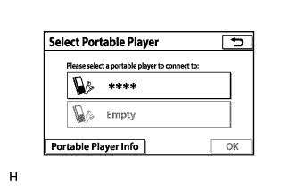
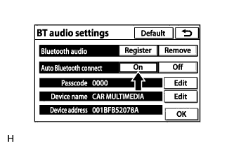

АУДИОВИЗУАЛЬНАЯ СИСТЕМА (для моделей с системой навигации) > Невозможно вручную/автоматически подключить портативный плеер |
| 1.ПРОВЕРЬТЕ НАСТРОЙКИ ПОДКЛЮЧЕННОГО УСТРОЙСТВА |
|  |
Перейдите на экран "Select Portable Player" (выберите портативный плеер) и проверьте, зарегистрирован ли портативный плеер как подключенное устройство.
| Результат | Следующий шаг |
| Портативный плеер зарегистрирован как подключенное устройство. | А |
| Портативный плеер не зарегистрирован как подключенное устройство. | B |
|
| ||||
| А | |
| 2.ПРОВЕРЬТЕ НАЛИЧИЕ ПРИЗНАКОВ НЕИСПРАВНОСТИ |
Проверьте состояние соединения между портативным плеером и радиоприемником в сборе.
| Результат | Следующий шаг |
| Портативный плеер не удается подключить вручную. | А |
| Портативный плеер не удается подключить автоматически. | B |
|
| ||||
| А | |
| 3.ПРОВЕРЬТЕ НАСТРОЙКИ АВТОМАТИЧЕСКОГО ПОДКЛЮЧЕНИЯ |
Перейдите на экран "BT Audio Settings" (настройки воспроизведения звука через Bluetooth) и проверьте настройки автоматического подключения аудиоустройств с поддержкой "Bluetooth".
|  |
Убедитесь, что параметр "Auto Bluetooth connect" (автоматическое подключение через Bluetooth) на экране "BT audio settings" (настройки воспроизведения звука через Bluetooth) имеет значение On (вкл).
|
| ||||
| OK | |
| 4.ПРОВЕРЬТЕ СОСТОЯНИЕ ПОРТАТИВНОГО ПЛЕЕРА |
Проверьте состояние портативного плеера.
Проверьте, не находится ли портативный плеер в режиме ожидания.
Убедитесь, что портативный плеер не подключен к другому устройству (к наушникам и т.п.).
|
| ||||
| OK | |
| 5.ВЫПОЛНИТЕ ПРОВЕРКУ В ДРУГОМ АВТОМОБИЛЕ ТАКОЙ ЖЕ МОДЕЛИ С АУДИОСИСТЕМОЙ, ПОДДЕРЖИВАЮЩЕЙ ТЕХНОЛОГИЮ "BLUETOOTH" |
Проверьте, можно ли вручную/автоматически подключить портативный плеер на другом автомобиле такой же модели с аудиосистемой, поддерживающей технологию "Bluetooth".
|
| ||||
| OK | |
| 6.СНИМИТЕ ВСЕ ДОПОЛНИТЕЛЬНЫЕ УСТРОЙСТВА, ИЗЛУЧАЮЩИЕ РАДИОВОЛНЫ |
Снимите все дополнительные устройства, излучающие радиоволны.
Проверьте, можно ли вручную/автоматически подключить портативный плеер.
|
| ||||
| OK | ||
| ||